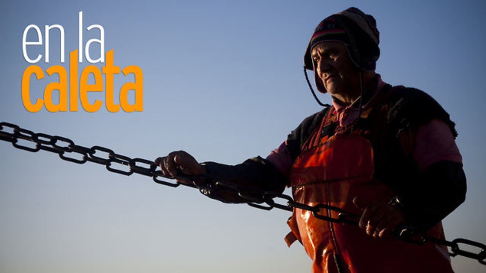
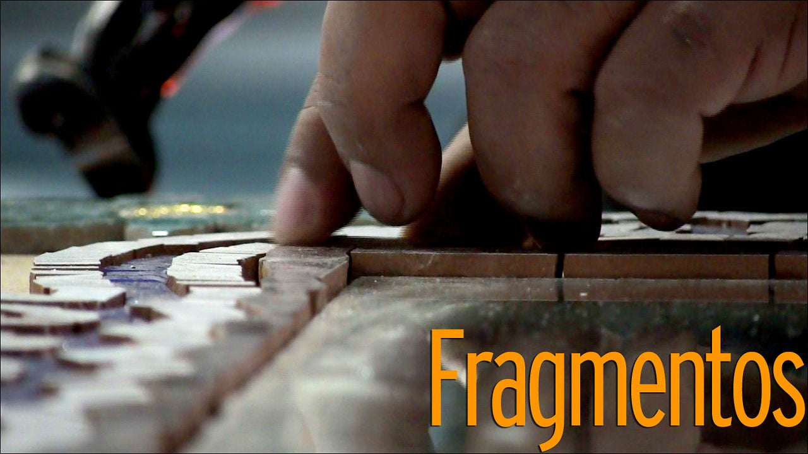
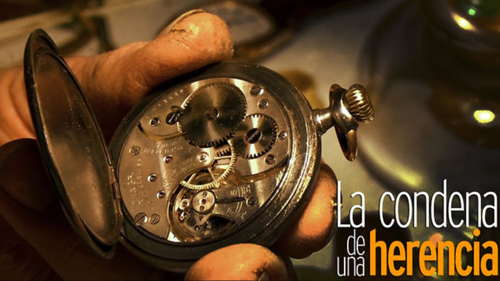
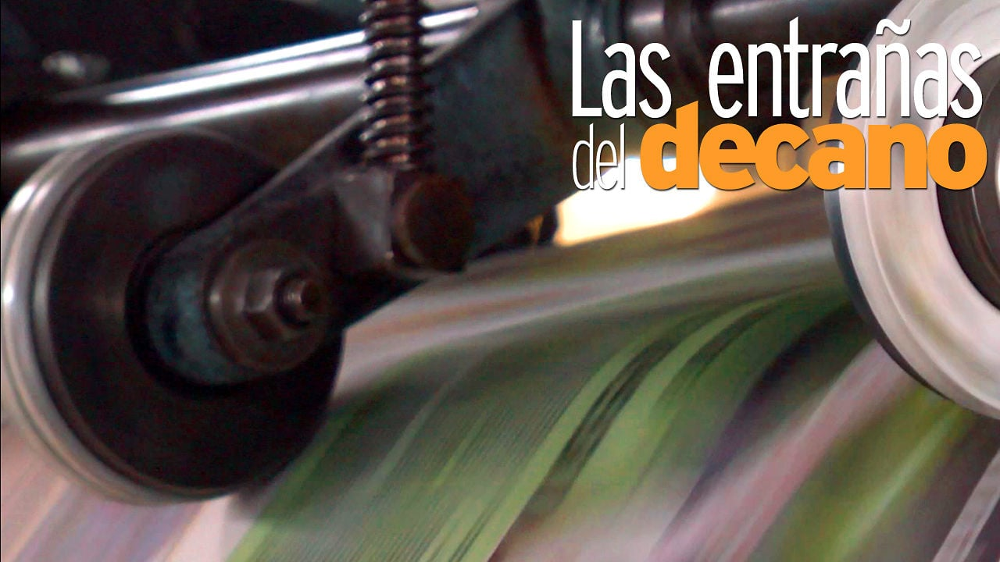
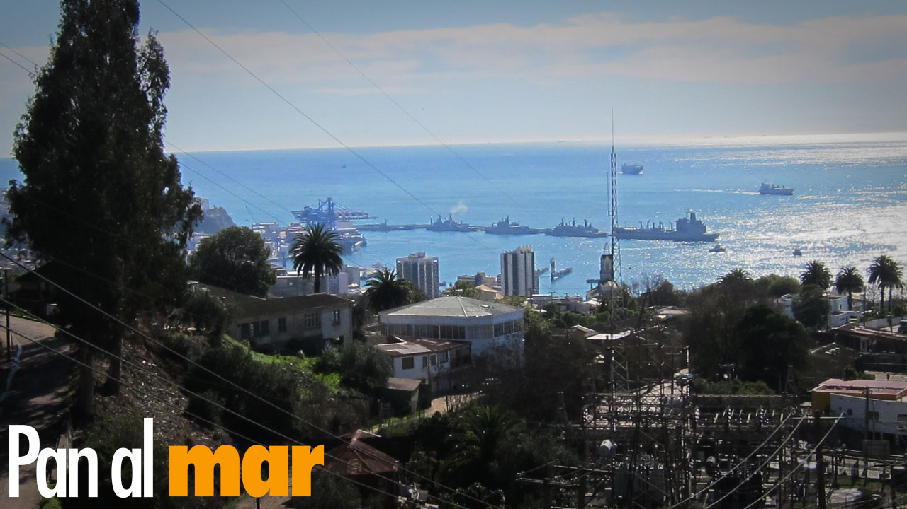
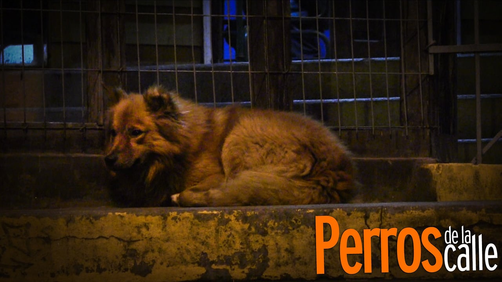
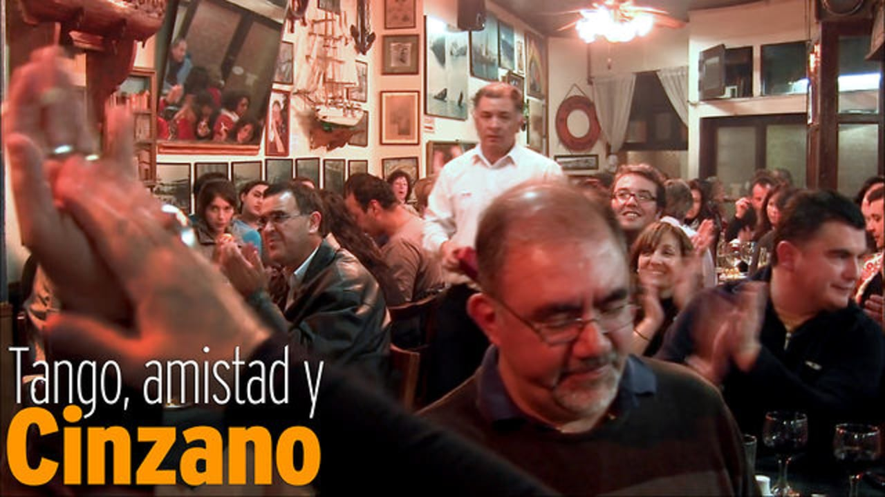
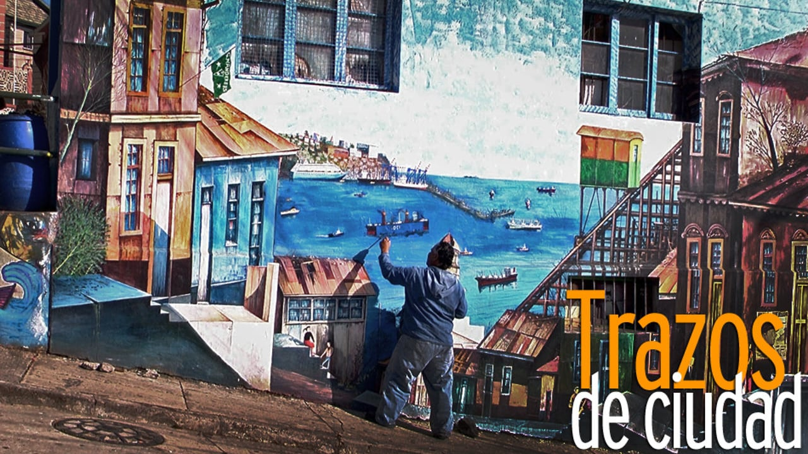

Adios al Cerro
Renán Romero trabaja en los ascensores desde noviembre de 1971.
Es el más veterano en su rubro y entiende su labor como una
entrega a los demás, donde nunca falta un saludo o una sonrisa.
Ahora que afronta su jubilación reconoce que quisiera prolongar su
estancia en El Peral, desde donde observa su ciudad adoptiva:
Valparaíso.
Encuentro en la cumbre
Estrella Roja y Cerro Monjas viven un partido de alto riesgo. El
equipo del Cerro Lomas ocupa la segunda posicion y aspira al
primer puesto, en manos de Cerro Monjas. El año pasado los dos
equipos se encontraron en la misma situación. Aquel partido lo
ganó Estrella Roja, y eso le convirtió en campeón de la fase
regular.

En la Caleta
El trabajo en el muelle empieza horas antes de que llegue el
primer bote de la mañana. Un par de ayudantes cortan jibias
pescadas durante la noche. Hunden los dedos en los ojos y
tentáculos de los moluscos para que no patinen. No hay asco.
Arrojan los restos al agua, para las aves que flotan y esperan
picotearlos antes de que se hundan. Otros dos, vestidos con
impermeables amarillos, cargan jibias a un camión.

Fragmentos
Jorge Tobar rompe para crear. Con las teselas retrata a quienes
han influido en su vida y le han inspirado. Sabe que su trabajo no
se valora lo suficiente, aún así, imagina la vida como un mosaico
que se construye pieza a pieza.

La condena de una herencia
Hans Kauffmann nunca eligió ser relojero. Desde hace 50 años está
atrapado en su oficio, pero sabe que las manecillas han educado a
sus hijos y construido todos sus logros. Como en una adicción, el
fin siempre se pospone.

Las entrañas del decano
El Mercurio de Valparaíso es el más antiguo de los diarios de
habla hispana en circulación. Cuando llega la medianoche, su
rotativa se pone en marcha.

Pan al mar
Vicente Alti llegó a Viña del Mar en 1941. Partió desde Bilbao
(España) para alejarse de las secuelas de la guerra. Después de 70
años en Chile, admite que este país se lo ha dado todo.

Perros de la calle
Valparaíso es probablemente la ciudad más turística de Chile.
Ésta realidad choca con la diaria convivencia, tanto de
extranjeros como de los lugareños, con los miles de perros
vagabundos que se encuentran en sus calles.
Sello personal
Keitty Álvarez decidió en 2008 formar su propia empresa. En
Humita Diseño ella toma las decisiones. Como en todo negocio
siempre surgen dificultades. Ahora suma un nuevo proyecto, esta
vez personal: su hija Emita. Mientras la marca se consolida paso a
paso como referente en Valparaíso, Keitty ve cómo su vida y su
emprendimiento se entrelazan.

Tango, amistad y Cinzano
El Cinzano ostenta el título de restaurante más antiguo de la
ciudad: 115 años. Es uno de los templos de Santiago Wanderers y
vive apegado a la nostalgia.

Trazos de ciudad
Mario Celedón retrata su ciudad natal. Los muros de Valparaíso
son sus lienzos. Su obra no sólo es su modo de vida, sino también
un legado para los porteños.